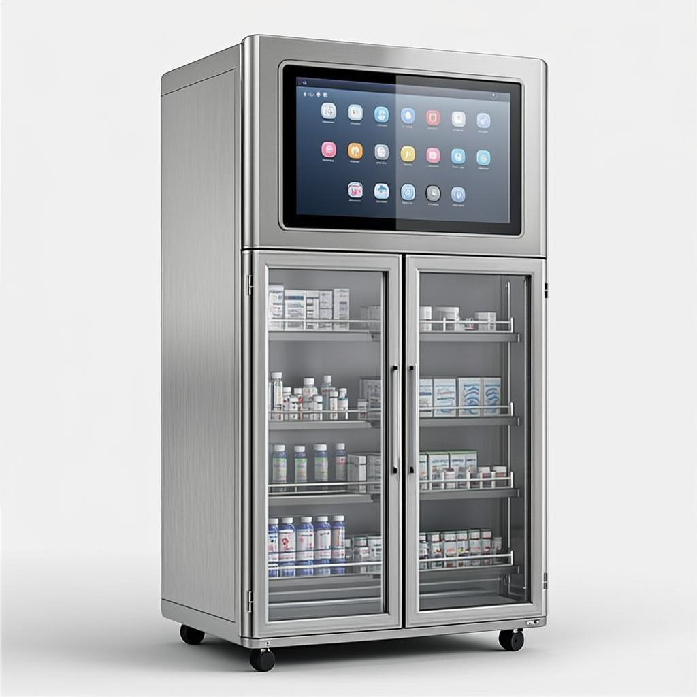

Distribuido en Argentina · Sede en Buenos Aires
Gabinete Médico RFID
Almacenamiento inteligente para activos médicos críticos.
- Compliance ANMAT y FDA 21 CFR Part 11
- Pantalla táctil HD 21.5″ (Windows / Android)
- Acceso por RFID, huella o reconocimiento facial

Inteligencia estéril. Cero compromisos.
Cada ítem trazado, cada escaneo confiable.
El gabinete Cykeo mantiene los consumibles quirúrgicos bajo llave, registrados y fáciles de rastrear. Doble cámara más RFID maneja 400 ítems con precisión del 99%, reduciendo horas de personal y errores. Funciona en salas estériles, compatible con Windows y Android, y cumple los requisitos de auditoría ANMAT y FDA.
Características clave
Operación eficiente
Sistema de 300W con UPS que sostiene 8 horas de respaldo durante cortes.
Escaneo de alta densidad
Impinj R2000 identifica 800+ ítems por estante, 1.000 tags/min.
Optimización con IA
Machine learning pronostica reposiciones, reduce 35% el sobrestock.
Doble autenticación
Vena del dedo + RFID con auditoría, cumple FDA 21 CFR Part 11.
Construcción ruggedizada
Acero al carbono 1.2mm, 200kg de carga, IP54 para lavado de quirófano.
Soporte multi-protocolo
RFID híbrido + Code128 / QR. SDK Java / C# para integraciones HIS.
Verificación dual
Doble cámara 1080p registra cada retiro de ítem con timestamps cifrados.
Especificaciones técnicas
Ingeniería de precisión para entornos hospitalarios exigentes.
HD multitouch con Windows o Android. Control total del inventario a la vista, escaneos completos en segundos.
Hasta 400 piezas trazadas en simultáneo con precisión superior al 99%, incluso a través de puertas de vidrio.
Escaneo completo del gabinete en 5 segundos, 1.000 tags por minuto. Rotación de quirófano sin demoras.
Resistente a polvo y agua. Soporta lavado de descontaminación estándar en quirófanos argentinos.
Chasis de acero al carbono de 1.2mm. Construido para uso intensivo en ambientes hospitalarios exigentes.
Cobertura UHF global. Compatible con estándares EPC C1G2 e ISO 18000-6C para tags de cualquier proveedor.
El rendimiento del producto se basa en pruebas en ambiente controlado. Según el entorno, los resultados pueden variar.
Diseñado para moverte
Conectividad WiFi y 4G mantiene alertas en vivo. Siempre sabés qué entra y qué sale, sin demoras, sin ítems perdidos. Control directo, sin complicaciones.
Preguntas frecuentes
¿Necesitás una solución a medida?
Enviá sus requisitos y datos de contacto válidos. Nuestros ingenieros entregan una solución personalizada en 24 horas.
Solicitar demo
Coordinamos una demostración presencial u online en Buenos Aires y todo el país.